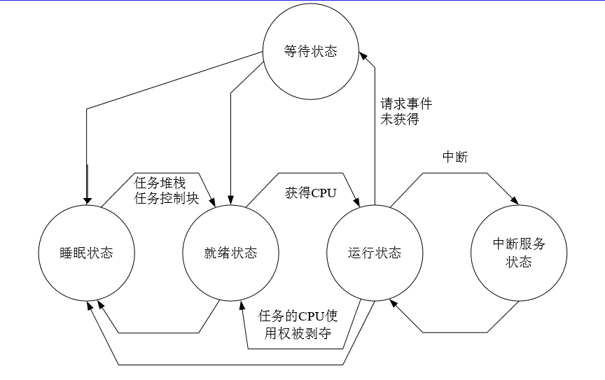
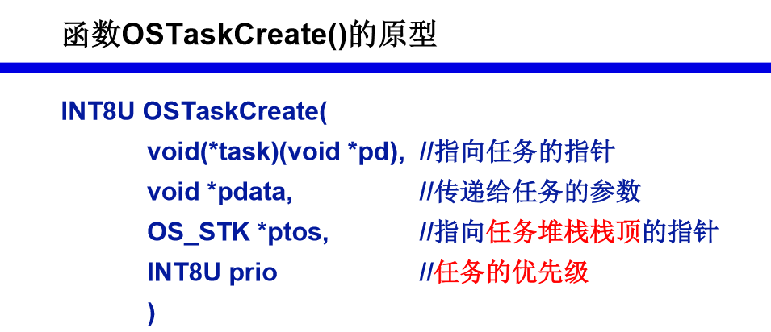
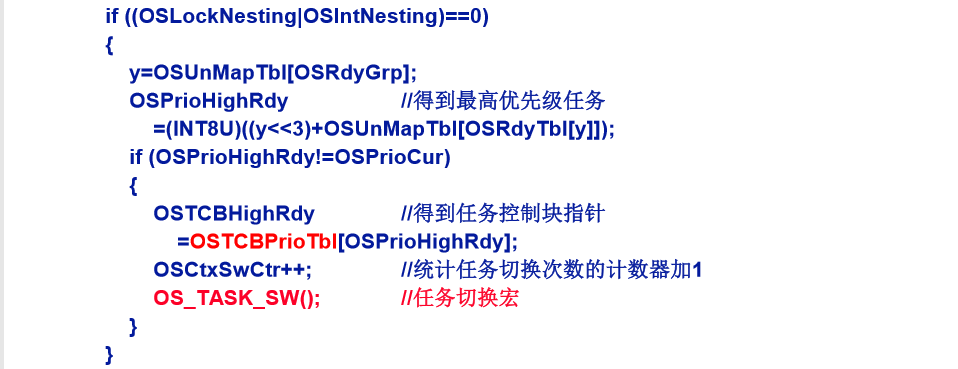
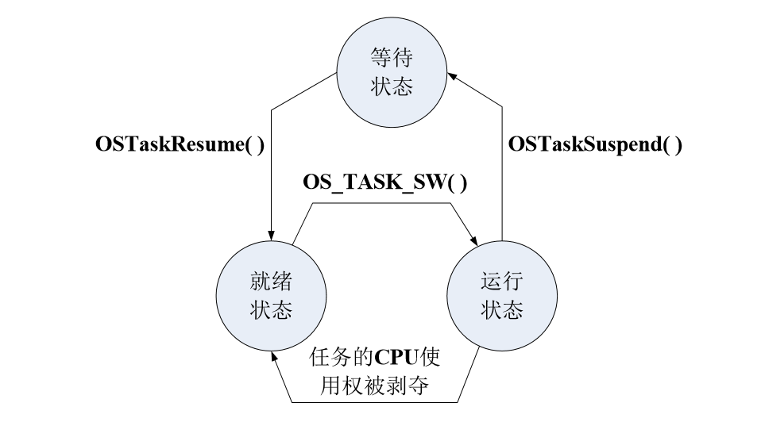
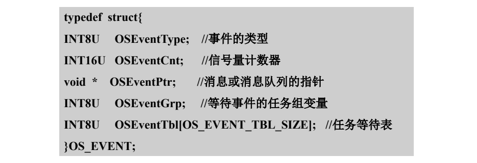
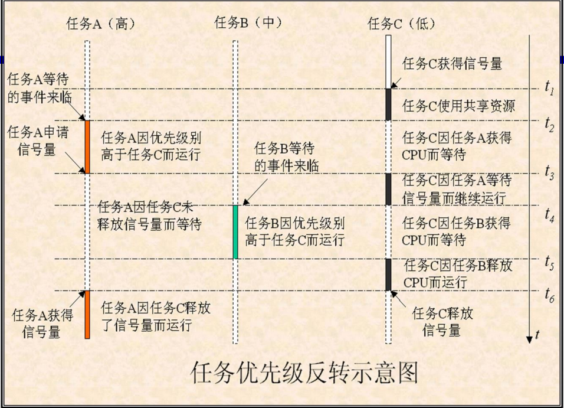

第一章 嵌入式实时操作系统的基本概念
第一章都是些基本概念知识，比如：什么是嵌入式操作系统，嵌入式操作系统是支持嵌入式系统工作的操作系统，一般用于比较复杂的嵌入式系统软件开发中；什么又是嵌入式实时操作系统，大多嵌入式系统应用在实时环境中，因此嵌入式操作系统跟实时（Real-Time）操作系统密切联系在一起；典型嵌入式操作系统有哪些，主要有VxWorks、Windows CE、Palm OS、QNX、Linux 和 μC/OS 等。这些东西了解即可，不用死记硬背，换句话说——不考。
第二章 uC/OS-II 中的任务（重点）
任务的基本概念
从应用程序设计的角度，uC/OS-II 的任务就是一个线程
uC/OS-II 任务的组成：
- 任务代码：任务的执行部分
- 任务堆栈：保存任务工作环境
- 任务控制块：保存任务的属性
uC/OS-II 的任务有两种：
- 用户任务：由应用程序设计者编写的任务
- 系统任务：系统提供的任务
预定义了两个系统任务：空闲任务和统计任务。系统在某个时间内无用户任务可运行而处于空闲状态，为使 CPU 在没有用户任务可执行时有事可做，uC/OS-II 提供了空闲任务。统计任务每秒计算一次 CPU 在单位时间内被使用的时间，并把计算结果以百分比的形式存放在变量 OSCPUsage 中，以便应用程序通过访问它来了解 CPU 的利用率。
任务的5种状态：睡眠状态、就绪状态、运行状态、等待状态、中断服务状态

uC/OS-II 最多可以对 64 个任务进行管理，其中系统任务（预留）8 个，用户任务 56 个
每个任务都必须具有一个唯一的优先级别，0～63 共 64 个优先级别，数字越小，优先级别越高
在文件 OS_CFG.H 中常数 OS_LOWEST_PRIO 表示最低优先级
任务个数：OS_LOWEST_PRIO + 1，其中 OS_LOWEST_PRIO 自动赋给空闲任务，OS_LOWEST_PRIO－1 自动赋给统计任务（存在的话）

任务的优先级别为 28 个即 0～27，则最低优先级别的常数 OS_LOWEST_PRIO 值为 27，应用程序中使用了系统提供的空闲任务和统计任务，则应用程序最多可以安排 28-2 = 26 个任务。
任务堆栈
任务的重要组成部分；每个任务都配有自己的堆栈；满足任务切换和响应中断时保护CPU寄存器中的内容及存储任务私有数据的需要；
在文件 OS_CPU.H 中的数据类型 OS_STK
1 | typedef unsigned int OS_STK; //该类型长度为16位 |
在应用程序中定义 OS_STK 类型的一个数组
1 |
|


堆栈的增长方向是随系统所使用的处理器不同而不同,例 2-4 是假设使用了支持堆栈向下增长方式的处理器，如果使用堆栈增长方向向上的形式则如下：
1 | OSTaskCreat(MyTask, &MyTaskAgu, &MyTaskStk[0], 20); |
任务控制块及其链表
任务控制块（OS_TCB）：用来记录任务的堆栈指针、任务的当前状态、任务的优先级别等一系列与任务管理有关的属性的表
用两条链表来管理任务控制块：
- 空任务控制块链表：应用程序调用函数 OSInit() 对 uC/OS-II 系统进行初始化时建立的单向链表
- 任务控制块链表：应用程序调用 OSTaskCreate() 创建任务时建立的双向链表
OSTCBInit() 的主要任务如下：
- 为被创建任务从空任务控制块链表获取一个任务控制块；
- 用任务的属性对任务控制块各个成员进行赋值；
- 把这个任务控制块链入到任务控制块链表；
**OSTCBPrioTbl[ ]**：以任务优先级为下标，保存任务控制块指针的数组。
为什么要对TCB进行初始化？
- 获得任务控制块
- 保存任务属性
任务就绪表及任务调度
uC/OS-II进行调度的思想
- 每时每刻总是让优先级最高的就绪任务处于运行状态
- 在系统或用户任务调用系统函数及执行中断服务程序 结束时，调用调度器来确定应该运行的任务并运行它
任务就绪表：OSRdyTbl[ ]数组，无符号8位数，一个元素可表达8个任务的就绪状态（1/0）
变量 OSRdyGrp 位数对应 OSRdyTbl[ ] 的下标，即组号；状态表示该组有无任务就绪
把优先级看成一个 6 位二进制数，表示范围为 0 ~ 63 共 64 个任务
- 用高 3 位表示 OSRyGrp 的具体数据位（组号），即任务就绪表数组元素的下标
- 低 3 位表示数组元素的具体数据位（位置号）

简单点的方法：不需要把 49 化成二进制再分别取高低三位，直接用 49 / 8 = 6…1 可知应该在 OSRdyTbl[6] 的 D1 位上置 1，同时要把变量 OSRdyGrp 的 D6 位置 1。又如书 P74 例 3-5 给的优先级别 prio = 30 ,用同样方法 30 / 8 = 3…6 可知应该在 OSRdyTbl[3] 的 D6 位上置 1，同时要把变量 OSRdyGrp 的 D3 位置 1。
OSMapTbl[ ] 是为加快运算速度定义的一个数组，它的各元素值为：
1 | OSMapTbl[0] = 00000001B; |
登记：在程序中，用下面的代码把优先级别为prio的任务置为就绪状态
1 | OSRdyGrp |= OSMapTbl[prio>>3]; |
举例 prio = 30 = 011 110
OSRdyGrp 的 D3 位置 1
OSRdyGrp = OSRdyGrp | OSMapTbl[3] = OSRdyGrp | 00001000
OSRdyTbl[3] 的 D6 位置 1
OSRdyTbl[3] = OSRdyTbl[3] | OSMapTbl[6] = OSRdyTbl[3] | 01000000
注销：使一个优先级别为prio的任务脱离就绪状态
1 | if((OSRdyTbl[prio>>3] &= -OSMapTbl[prio&0x07])==0) |
举例 prio = 30 = 011 110
if(OSRdyTbl[3] &= 10111111 == 0) 将 OSRdyTbl[3] 的 D6 位置 0，如果 OSRdyTbl[3] == 0 即所有任务都处于非就绪状态
OSRdyGrp = OSRdyGrp & 11110111 OSRdyGrp 的 D3 位置 0 ，其它位不变
查找最高优先级： 从任务就绪表中获得优先级别最高的就绪任务
1 | Y = OSUnMapTbl[OSRdyGrp]; //获得优先级别高3位 |
辅助数组 OSUnMapTbl[ ] 的赋值过程（分析较长，可跳过）
变量 OSRdyGrp 格式如下：
| D7 | D6 | D5 | D4 | D3 | D2 | D1 | D0 |
|---|---|---|---|---|---|---|---|
| 1/0 | 1/0 | 1/0 | 1/0 | 1/0 | 1/0 | 1/0 | 1/0 |
分析 y = OSUnMapTbI[OSRdyGrp]; //优先级高三位
① D0=1时
表明OSRdyTbl[0]中有任务就绪，OSRdyTbl[0]中的任务优先级为0-7，则y应该为0，OSRdyGrp为奇数，故数组OSUnMapTbl中以奇数为下标的数组元素都应该为0；
② D1=1,D0=0时
表明OSRdyTbl[1]中有任务就绪，OSRdyTbl[1]中的任务优先级为8-15，则y应该为1，OSRdyGrp取值为2、6、10、14、18…，故数组 OSUnMapTbl中下标能被2整除且不能被4整除的数组元素值都应该为1；
③ D2=1,D1=0,D0=0时
表明OSRdyTbl[2]中有任务就绪，OSRdyTbl[2]中的任务优先级为16-23，则y应该为2，OSRdyGrp取值为4、12、20、28…，故数组 OSUnMapTbl中下标能被4整除且不能被8整除的数组元素值都应该为2；
④ D3=1,D2=0,D1=0,D0=0时
表明OSRdyTbl[3]中有任务就绪，OSRdyTbl[3]中的任务优先级为24-31，则y应该为3，OSRdyGrp取值为8、24、40、56…，故数组 OSUnMapTbl中下标能被8整除且不能被16整除的数组元素值都应该为3；
⑤ D4=1,D3=0,D2=0,D1=0,D0=0时
表明OSRdyTbl[4]中有任务就绪，OSRdyTbl[4]中的任务优先级为32-39，则y应该为4，OSRdyGrp取值为16、48、64、80…，故数组 OSUnMapTbl中下标能被16整除且不能被32整除的数组元素值都应该为4；
⑥ D5=1,D4=0,D3=0,D2=0,D1=0,D0=0时
表明OSRdyTbl[5]中有任务就绪，OSRdyTbl[5]中的任务优先级为40-47，则y应该为5，OSRdyGrp取值为32、96、160、224，故数组 OSUnMapTbl中下标能被32整除且不能被64整除的数组元素值都应该为5；
⑦ D6=1,D5=0,D4=0,D3=0,D2=0,D1=0,D0=0时
表明OSRdyTbl[6]中有任务就绪，OSRdyTbl[6]中的任务优先级为48-55，则y应该为6，OSRdyGrp取值为64、192，故数组 OSUnMapTbl中下标能被64整除且不能被128整除的数组元素值都应该为6；
⑧ D7=1,D6=0,D5=0,D4=0,D3=0,D2=0,D1=0,D0=0时
表明OSRdyTbl[7]中有任务就绪，OSRdyTbl[7]中的任务优先级为56-63，则y应该为7，OSRdyGrp取值为128，故数组OSUnMapTbl中下标为128的数组元素值应该为7；
调度器有两种：
- 任务级调度器：OSSched() 函数
- 中断级调度器：OSIntExit() 函数
任务调度主要工作有两项：
- 在任务就绪表中查找具有最高优先级别的就绪任务
- 实现任务切换
- 获得待运行任务的 TCB 指针
- 进行断点数据的切换

任务切换宏 OS_TASK_SW() 实际工作主要由 OSCtxSw 来完成，OSCtxSw() 依次完成的工作
- 把被中止任务的断点指针保存到任务堆栈中
- 把 CPU 通用寄存器的内容保存到被中止任务的堆栈中
- 把被中止任务的任务堆栈指针当前值保存到该任务的任务控制块的 OSTCBStkPtr 中
- 获得待运行任务的任务控制块
- 使 CPU 通过任务控制块获得待运行任务的任务堆栈指针
- 把待运行任务堆栈中通用寄存器的内容恢复到 CPU 的通用寄存器中
- 使 CPU 获得待运行任务的断点指针PC
任务的创建
有两个用来创建任务的函数：
- OSTaskCreate()
- OSTaskCreateExt()
调用函数OSStart()之前先创建一个任务，并赋予它最高的优先级别，从而使它成为起始任务；然后在这个任务中，再创建其它各任务。


多任务程序分析方法：时间轴法
任务的挂起和恢复

挂起任务函数 OSTaskSuspend() 和恢复任务函数 OSTaskResume() 的原型
1 | INT8U OSTaskSuspend (INT8U prio); |
挂起任务自身时,函数参数为：OS_PRIO_SELF（0xFF）
其他任务管理函数
任务优先级别的修改
1 | INT8U OSTaskChangePrio( |
任务的删除
1 | INT8U OSTaskDel( |
- 把被删除任务的任务控制块从任务控制块链表中删除，并归还给空任务控制块链表，然后在任务就绪表中把该任务的就绪状态置为0，于是该任务就不能再被调度了
- 可以通过调用 OSTaskDel() 来删除任务自身或除了空闲任务之外的其它任务
- 删除任务自己时，函数参数为：OS_PRIO_SELF
- 被动删除的任务，往往存在动态分配资源丢失!!
一般删除任务的方法
- 提出删除任务请求的任务 A 只负责提出删除任务请求，而删除工作则由被删除任务 B 自己来完成
- 联络信号：OSTCBDelReq（ B 的任务控制块成员）
- A 调用请求删除任务函数：OSTaskDelReq()
- 函数原型：INT8U OSTaskDelReq( INT8U prio ) //待删除任务的优先级别
- 提出删除任务请求的调用参数：prio
查询任务信息
1 | INT8U OSTaskQuery( |
uC/OS-II的初始化和任务的启动
uC/OS-II的初始化（ OSInit() ）
- 对所有的全局变量和数据结构进行初始化
- 创建空闲任务OSTaskIdle，并赋之以最低优先级和永远的就绪状态
- 如果常数 OS_TASK_STAT_EN = 1，则以优先级别为 OS_LOWEST_PRIO - 1 来创建统计任务
- OSInit() 对数据结构初始化
- 主要是创建包括空任务控制快链表在内的 5 个空数据缓冲区
- 空任务控制块链表
- 空队列控制块链表
- 空事件控制块链表
- 空标志组链表
- 空内存控制块链表
- 创建数组 OSTCBPrioTbl[OS_LOWEST_PRIO+1]
- 主要是创建包括空任务控制快链表在内的 5 个空数据缓冲区
第三章 uC/OS-II的中断和时钟
中断响应过程
- 系统接收到中断请求后，这时如果CPU处于中断允许状态（即中断是开放的），系统就会中止正在运行的当前任务，而按照中断向量的指向转而去运行中断服务子程序；
- 当中断服务子程序的运行结束后，系统将会根据情况返回到被中止的任务继续运行或者转向运行另一个具有更高优先级别的就绪任务。
临界段
在应用程序中经常有些代码段必须不受任何干扰地连续运行，这样的代码段叫做临界段
时钟中断
- uC/OS-II 用硬件定时器产生周期为毫秒级的周期性中断来实现时钟，最小时钟单位叫时钟节拍
- 时钟节拍中断服务程序 OSTickISR（）
- 调用时钟节拍服务函数 OSTimeTick（）完成：
- 给计数器 OSTime 加 1
- 遍历所有 TCB，将它们的 OSTCBDly 减 1
- 若 OSTCBDly 为 0，且任务未被挂起，将其置为就绪态并相应的修改就绪表
延时函数
1 | OSTimeDly(INT16U ticks); //参数 ticks 以时钟节拍数为单位的延时时间 |
第四章 任务的同步与通信
任务同步
为实现任务间的合作和无冲突运行，各任务间需建立制约关系。有两种制约关系：
- 直接制约关系：源于任务间的合作
- 间接制约关系：源于对资源的共享/竞争
任务间这种制约性的合作运行机制叫做任务间的同步，系统中的同步是依靠任务间互发消息来保证的！
事件
在 uC/OS-II 中，使用信号量、邮箱（消息邮箱）和消息队列这些被称为事件的中间环节来实现任务之间的通信。
- 信号量 是一类事件，使用它是为了建立一个标志来表示某共享资源被占用的情况
- 用来传递消息缓冲区指针的数据结构叫做消息邮箱
- 可传递多个消息的数据结构叫做消息队列
事件控制块
uC/OS-II 使用 事件控制块 ECB 的数据结构来描述诸如信号量、邮箱（消息邮箱）和消息队列这类事件

采用类似于任务就绪表的 任务等待表 来完成对等待事件的任务的记录与排序
- 等待时限记录在 TCB 成员 OSTCBDly 中；
- 当有任务的时限已到时，将其从任务等待表中删除，并设置任务就续表，使其进入就绪状态；
空事件控制块链表：uC/OS-II 初始化时，函数 OSInit() 创建 OS_MAX_EVENTS 个空事件控制块并借用成员 OSEventPtr 将它们链接成一个单向链表
- 当新创建一个事件时，从该空事件控制块链表取下一个空 ECB 并对其初始化
- 当删除一个事件时，将事件的 ECB 归还给空事件控制块链表
信号量及其操作
信号量两部分组成：
- 信号量计数器
- 任务等待表
1 | // 创建信号量 |
优先级反转
- 定义：在可剥夺型内核中，当某任务以独占方式共享资源时，会出现低优先级任务先于高优先级任务而被运行的现 象，这叫做优先级反转
- 产生优先级反转的原因：一个低优先级的任务在获得了信号量使用共享资源时，被具有较高优先级的任务打断而不能释放信号量，从而使正在等待这个信号量的更高优先级的任务因得不到信号量而被迫处于等待状态。在这个等待期间，就让优先级别低于它而高于占据信号量的任务的任务先运行
- 对系统的影响：优先级反转极大的恶化了高优先级任务的运行环境，是实时系统所无法容忍的

- 根本原因：使用信号量的任务能否运行受到 任务的优先级别 和 是否占有信号量 两个条件的约束
- 互斥型信号量是一个二值信号量，解决任务在使用独占式资源出现的优先级反转问题
1 | // 创建互斥信号量 |
消息邮箱及其操作
1 | // 创建消息邮箱 |
消息队列及其操作
- 消息队列包含：事件控制块、消息队列、消息
- 消息队列的核心是消息指针数组
- 向指针数组插入消息指针有两种方式：FIFO 和 LIFO
- uC/OS-II 初始化时，创建由 OS_MAX_QS 个队列控制块组成的 空队列控制块链表
1 | // 创建消息队列 |
例 4 -9 （ P180 ）

任务优先级：S>M>Y，后进先出方式发送消息
0 秒开始 S 依次发送了s0、s100、s1，延时 1 秒，M 请求消息队列输出 s1，延时 1 秒，Y 请求消息，输出 s100，延时 1 秒，1 秒时，S又发送了 s100 和 s1，同样 M Y 依次请求消息队列，输出 s1 s100，2 秒时，S 没有发送，延时 1 秒，M请求消息队列，输出 s0，Y 没有请求到等待，N 秒时，三个任务都就绪，S发送 s500延时 1 秒，M 请求消息队列，输出 s500，延时1 秒，N+1 秒时，Y 请求消息队列输出 s500，M 等待，N+2 秒时，M 请求消息队列输出 s500，Y 等待。。。
第五章 信号量集
信号量集由两部分组成：
- 标志组：存放了信号量集中的所有信号
- 等待任务链表：每个节点都对应一个正在等待信号量集的等待任务
uC/OS-II 初始化时，系统创建 OS_MAX_FLAGS 个标志组，并将其连接成一个空标志组链表
信号量集的操作
1 | // 创建信号量集 |
例 5 - 1 （ P195 ）源代码


任务优先级 MyTask > YouTask > HerTask
任务开始 MyTask 优先级最高请求不到信号量集处于等待状态，YouTask 开始运行，输出 S2，延时 8 秒，接着 HerTask 连续运行，输出 8 个 S3，第 8 秒时，YouTask 运行发送信号量集，这时两个任务都发送了信号，发送完被高优先级 MyTask 打断，MyTask 输出 S1 延时 2 秒，接着 YouTask 继续运行，延时两秒，HerTask 输出 S3 延时 1 秒，到第 9 秒后，HerTask 输出 S3 延时 1 秒，第10 秒，MyTask 输出 S1 延时 2 秒，YouTask 输出 S2，延时 8 秒，HerTask 输出 S3 延时 1 秒…
把 MyTask 修改为无等待请求信号量集 OSFlagAccept()
第六章 内存的动态分配
内存的两级管理
把一个连续的内存空间分成若干个分区，每个分区又分成了若干大小相等的内存块来管理
动态内存的管理
1 | // 创建动态内存分区 |

第七章 在51单片机上移植 uCOS-II
可重入函数
在多任务操作系统中，系统提供的函数应该能允许同时被多个任务所调用，而不会通过函数中变量的耦合引起任务之间的互相干扰。
系统堆栈
片内RAM中的公用堆栈，只存放运行的任务堆栈
任务堆栈映象
片外RAM中用来存放任务堆栈内容的区域
系统堆栈与任务堆栈映象的关系
- 51 单片机要求堆栈必须设置在片内RAM中，51单片机的片内 RAM 极其有限，不可能把应用程序中所有任务的任务堆栈都设置在片内RAM中
- 解决办法：把应用程序中各个任务堆栈的内容存放在片外RAM中的任务堆栈映象中，而只在片内 RAM 中设置一个公用的系统堆栈
第八章 在ARM7上移植uCOS-II
工作模式的选择映像
系统模式和用户模式
处理器相关的移植文件
- OS_CPU.H
- OS_CPU_C.C
- OS_CPU_A.S
如果你看到这，恭喜这本书的主要内容已经掌握了，考试肯定不是问题，下面分享下干货！
干货
这是老师给的知识点总结：
第2章 uC/OS-II中的任务
1、任务的基本概念
2、任务堆栈
3、任务控制块
4、任务就续表及其操作
5、任务调度、任务切换
6、任务调度器函数OSSched()
7、任务创建
8、任务的挂起和恢复
9、请求删除任务函数
10、任务初始化
第3章 uC/OS-II的中断和时钟
1、中断响应过程
2、临界段的概念
3、时钟中断
4、延时函数
第4章 任务的同步与通信
1、任务同步
2、事件
3、事件控制块
4、事件的操作（创建、发送、请求）
5、优先级反转
6、相关例题（例8、例9）
第5章 信号量集
1、信号量集
2、信号量集的操作（创建、请求和发送）
3、相关例题（例1）
第6章 内存的动态分配
1、内存的管理
2、内存分区的组织
3、动态内存的管理（创建、请求、释放）（例1、例2）
第7章 在51单片机上移植uCOS-II
1、可重入函数
2、系统堆栈和任务堆栈
第8章 在ARM7上移植uCOS-II
1、工作模式的选择映像
2、与处理器相关的移植文件
在此基础上本人详细的罗列了一些考点：
任务组成
两种系统任务
64个任务
任务5中状态
OS_LOWEST_PRIO
堆栈增长方向，影响 OSTaskCreate 函数任务堆栈栈顶指针参数 P66
OSTCBPrioTbl 数组：以任务的优先级为下标，保存任务的任务控制块指针的数组
任务就绪表操作：登记、注销、最高优先级就绪任务查找 会写
为什么管理64个任务：OSRdyTbl[ ] 有8个数组元素，每个元素都是8位二进制数，可表示8个任务的就绪状态，所以系统最多可以管理8x8=64个任务
OSSched() 函数代码加黑部分要会写 P77
任务切换7个步 P79
挂起自身 OXFF
删除任务过程：提出删除任务请求的任务调用请求删除任务函数，改变联络信号值，当被删除任务查到信号值改变，会在适当的时候删除自身。
初始化5个链表：空任务控制块链表、空事件控制块链表、空队列控制块链表、空标志组链表、空内存控制块链表
中断响应过程
OSTimeTick 做的三件事 PPT上有，书上说了 2 件，其实也是 3 件
OSTimeTick 代码懂且能写出来
两个延时函数 OSTimeDly 和 OSTimeDlyHMSM
事件（信号量、消息邮箱、消息队列）的操作（创建、请求、发送） 能看懂代码
优先级反转：定义、过程、解决方法（使用互斥信号量）
例8 例9 会分析解释 时间轴法
信号量集的操作
例1 会分析解释
内存二级管理
例1、2 看懂会写吧
可重入函数定义
系统/任务堆栈
用户模式/系统模式
3个移植文件：OS_CPU.H、OS_CPU_C.C、OS_CPU_A.S
最后个干货，中国矿业大学2019-2020 第一学期嵌入式操作系统 A 卷：
一、简答题（50分）
- 任务的分类
- 可以管理多少任务？从 OSRdyTbl[ ] 解释之
- 给一个 prio = 29，注销操作，哪一位置 0
- 中断响应过程
- 能否使用全局变量来实现任务间的通信? 如果可以，有什么缺点?
二、程序填空（20分，会给注释）
- 任务的创建源代码
- OSSched() 函数
- OSTimeTick() 函数
- 写信号量集的请求的例子
三、综合（30分，都是书上的例子）
- 任务挂起与恢复
- 消息队列